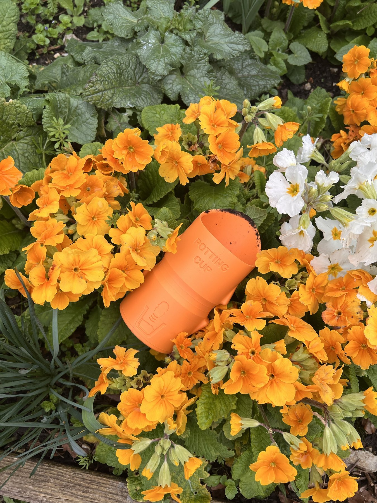

The superdooperscouper

I have now given more than ten Potting Cup prototypes to gardeners to use at home, with one request: tell me honestly what you think. The reviews came back with a nickname I did not see coming. People have started calling it the "superdooperscouper", and I'm not going to argue.
The funny part is that people have used it for everything but potting. One tester scoops feed for their chickens with it. Pamela, 79, uses it to spread fertiliser. Another uses it to water hanging baskets, because lifting a heavy watering can above your head is hard work and the cup is light enough to reach up with. I designed it for one job and people found several more, which tells me the basic shape works well beyond the brief.
Ryan, a landscape gardener, put the practical case better than I could:
It’s a simple idea but very practical.
Ryan, landscape gardener
The feedback that matters most
Two of the cups went to gardeners with arthritis. Both had struggled for a long time to grip a garden trowel properly. Both told me they are really happy with it, and that they can pot comfortably again.
I suffer with mild arthritis in my hands, and having used a trowel for many years, this cup is much easier to use and scoops up more soil.
Pamela, 79
That was the reason I started this project. Hearing it from the people it was designed for is the best result I could have asked for.